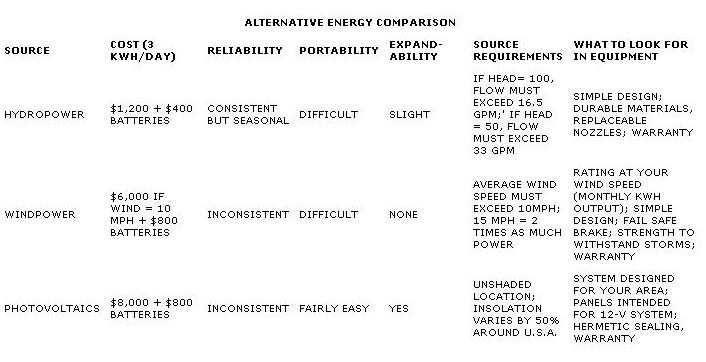

To withdstand high-amperage 12-volt DC power, switches should be equipped with 47-microfarad capacitors wired in parallel to tame arcing between the contacts. Use only snap (as opposed to silent) switches for DC power.